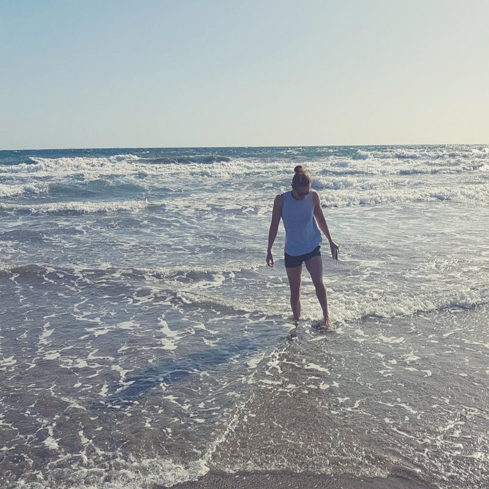

For the first post of 2018, I was expecting to write a review of the past year and my hopes for the coming year, but things haven't quite gone that way and I guess it has been a while since my last post. Honestly, I can't give you a reason why it has been so long since my blog post on the Taipei 2017 - Universiade, but here I am making some sense of the last few months.
The busy year caught up to me in the final few months of 2017. Motivation has been low, I've been getting easily distracted and feel like I haven't been making progress. This was going to be the topic of this post. However, after the Christmas break and some time to recharge my batteries, my view has changed, even if only slightly.
I still believe that personally, motivation has been low and focus lacking, however progress has been made ... just mostly not in my work and that's ok. The university women's water polo team have had a fantastic unbeaten first semester, my wonderful girlfriend has graduated from the University of Manchester with a first class honours in midwifery, my paper has gone through the submission process and has been accepted by ACP, I was part of the Sport Manchester and XXI club (UoM sport alumni association) champions breakfast discussing the importance of supporting performance sport at the University of Manchester. So I've still been pretty busy.
I would like nothing better than to be able to take some credit for the exciting matches, events and graduations I have been able to tag along to over the past few months. However, I definitely had nothing to do with these successes. I guess that's why I felt progress had been slow. But you know what, I am honoured to have been a part of others journeys and achievements over the past few months. I have enjoyed every moment and have been beaming with pride over the achievements of my girlfriend and the water polo team, telling anyone and everyone how fantastic they are. So I guess it has been while since I blogged about my journey, but I'm more than ok with that.